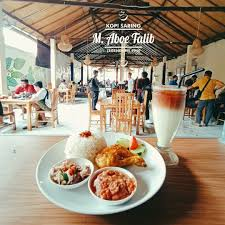

Kopi M. Aboe Talib bukan sekadar bisnis, ini adalah warisan keluarga yang dimulai sejak tahun 1940 di Anyar, Kediri, Tabanan.
Kami mempertahankan teknik sangrai tradisional menggunakan kayu bakar untuk menghasilkan aroma khas yang tajam dan rasa yang tetap konsisten selama lebih dari 80 tahun.